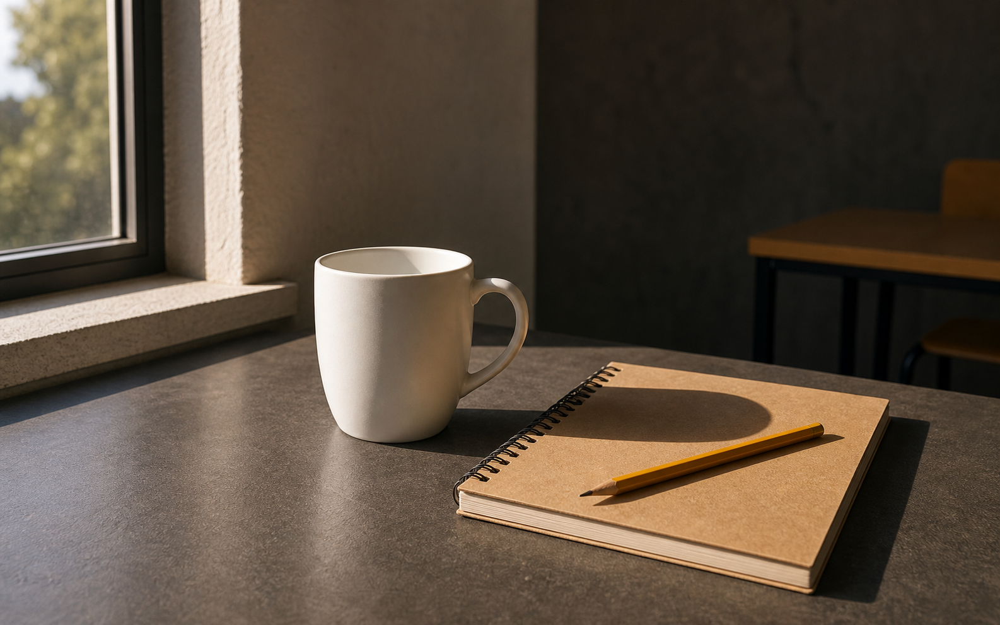
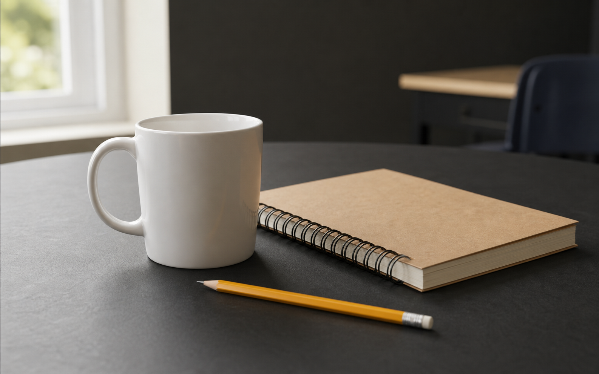

Natural lateralVolume forte, textura e sombra legível.

Natural frontalDetalhe alto, sombra discreta, menor volume.

Contra-luzRecorte, silhueta e perda controlada de detalhe.
Ring lightControle simples, reflexo circular e sombra plana.
Luz mistaFrio e quente no mesmo quadro pedem decisão de WB.
Na prática, não copie a foto. Copie o raciocínio: fonte, direção, qualidade da sombra e cor da luz.